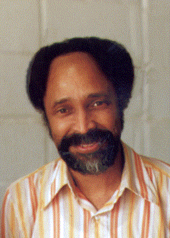

Dr. Clarence "Skip" Ellis
O pioneiro do trabalho colaborativo e o primeiro PhD negro em Computação

Dr. Clarence "Skip" Ellis (1943–2014)
Quem foi Clarence "Skip" Ellis?
Nascido em Chicago em 1943, Clarence Ellis cresceu em um cenário de extrema pobreza e segregação racial. Apesar de todas as barreiras sociais da época, ele se apaixonou pela computação ainda na adolescência e fez história ao se tornar o primeiro homem negro a obter um Doutorado (PhD) em Ciência da Computação na história dos Estados Unidos, em 1969, pela Universidade de Illinois.
Grandes Feitos Tecnológicos
O trabalho de Skip Ellis mudou para sempre a forma como a humanidade interage com softwares. Seus principais destaques incluem:
- O Pai do Trabalho Colaborativo: No lendário centro de pesquisas Xerox PARC, ele liderou o desenvolvimento do OfficeTalk. Esse foi o primeiro sistema que permitiu que várias pessoas distantes editassem e colaborassem no mesmo documento simultaneamente a base do que hoje conhecemos como Google Docs, Microsoft Teams e Notion.
- Pioneirismo em Interfaces Gráficas: Ele também fez parte da equipe que ajudou a criar as primeiras interfaces de computador com ícones e cliques de mouse, tecnologia que inspirou diretamente a criação do Windows e do MacOS.
- Algoritmos de Concorrência: Ellis desenvolveu conceitos matemáticos complexos para garantir que, quando duas pessoas digitassem ao mesmo tempo em uma rede, os dados não fossem perdidos ou corrompidos.
Curiosidades Fascinantes
- O Guarda Noturno da Computação: Seu primeiro contato com um computador foi aos 15 anos, quando conseguiu um emprego de vigia noturno em uma empresa. Ele tinha ordens estritas para não tocar na máquina (um gigantesco computador valvulado). Escondido, ele leu todos os manuais técnicos do equipamento e, quando o sistema quebrou em um final de semana, foi o jovem Skip quem consertou sozinho.
- O apelido "Skip": Ele era carinhosamente chamado de "Skip" (pular/saltar) por amigos e colegas devido à sua mente ágil, que parecia sempre estar "saltando" passos à frente na resolução de problemas complexos.
- Professor e Mentor: Após fazer história na indústria (trabalhando na IBM, Xerox, Bell Labs e dezenas de outras gigantes), ele dedicou o fim de sua vida a dar aulas na Universidade do Colorado, focando seus esforços em incluir minorias e jovens negros na área da tecnologia.